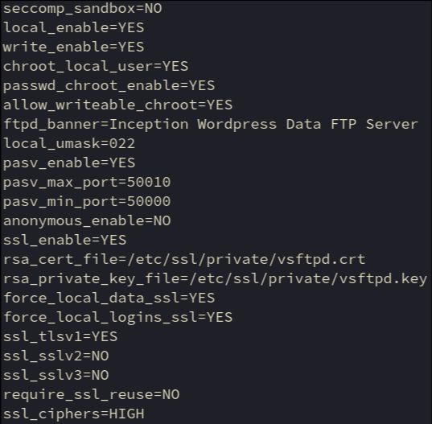

Security sandboxing feature that causes problems in alpine
Server does not work with this setting enabled on alpine
Local user accounts used to login
Controls whether any FTP commands which change the filesystem are allowed or not
users will be (by default) placed in a chroot() jail in their home directory after login
The home directory will appear to be “/”, they can not navigate above this level
Limits users to their own home and subdirectories
Each user's jail is derived from their home directory string in /etc/passwd
Allows users to change the filesystem in their chroot
Message displayed when loggin in to server
Replaces generic server message
Set file permissions to read/write for owner and read for group/others
As the uid/gid matches wp-data user on wordpress server, any files uploaded will be owned by the wp-data user from the wordpress container perspective
Allow passive mode data connections
Active mode can cause connection issues on clients as the data connection is server initiated. This is often rejected by client firewalls
In passive mode the server selects a data transfer port from the rangeprovided below but the client initiates the data connection, this is not normally blocked by client firewall
Upper bound of port range available for passive data transfer
Lower bound of port range available for passive data transfer
Controls whether anonymous logins are permitted or not. If enabled, both the usernames ftp and anonymous are recognised as anonymous logins
Supports ssl for command and data connections
Some clients do not support it but without ssl enabled all data including user names / passwords is sent in plain
SSL certificate used for encrypting sessions
SSL private key to be used for encrypting sessions
All non-anonymous logins are forced to use a secure SSL connection in order to send and receive data on data connections
Files uploaded/downloaded are encrypted
All non-anonymous logins are forced to use a secure SSL connection in order to send the password
Server passwords cannot be intercepted
Permits TLS v1 protocol connections
Preferred method by default, only protocol version allowed by this config
SSLv2 is unsecure
SSLv3 is unsecure
All SSL data connections are required to exhibit SSL session reuse (which proves that they know the same master secret as the control channel)
Can break compatibility with many ftp clients
only allow “high-strength” encryption ciphers during TLS handshakes and limits which cryptographic algorithms can be used
includes only ciphers using 128-bit or stronger encryption such as:
ECDHE-RSA-AES256-GCM-SHA384
ECDHE-RSA-AES128-GCM-SHA256
AES256-SHA
AES128-SHA